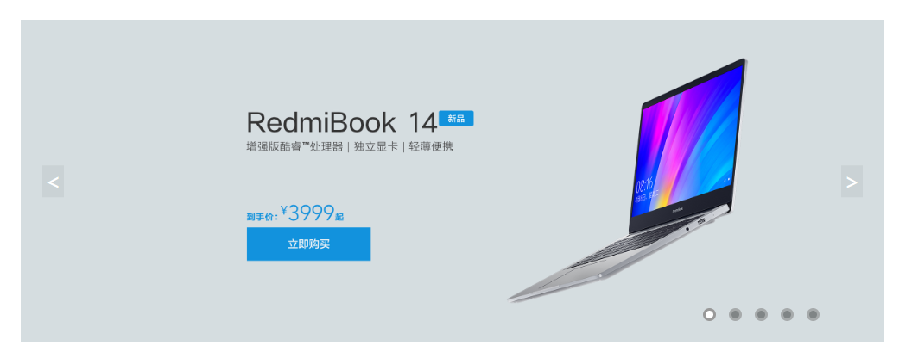

实现轮播图有很多方式，但是html的结构都是一样的。本文使用了Jquery框架，Dom操作更加方便灵活
html部分：
<div class="banner">
<ul>
<li><a href="javascript:;"><img src="Img/1.jpg" /></a></li>
<li><a href="javascript:;"><img src="Img/2.jpg" /></a></li>
<li><a href="javascript:;"><img src="Img/3.jpg" /></a></li>
<li><a href="javascript:;"><img src="Img/4.jpg" /></a></li>
<li><a href="javascript:;"><img src="Img/5.jpg" /></a></li>
</ul>
<div class="arrow">
<span class="arrow-l"><</span>
<span class="arrow-r">></span>
</div>
<ol>
<li class="dot"></li>
<li></li>
<li></li>
<li></li>
<li></li>
</ol>
</div>
CSS代码：
* {
margin: 0;
padding: 0;
box-sizing: border-box;
}
body{
background-color:#fff;
}
li{
list-style:none;
}
.banner{
width:800px;
height:300px;
margin:100px auto;
position:relative;
}
.banner ul li{
display:none;
position:absolute;
}
.banner ul li:first-child{
display:block;
}
.banner ul li a{
display:block;
}
.banner ul li a img{
width:800px;
height:auto;
}
.arrow span {
width:20px;
height:30px;
background:rgba(0,0,0,0.05);
color:#fff;
position:absolute;
top:50%;
transform:translate(0,-50%);
line-height:30px;
text-align:center;
font-size:20px;
cursor:pointer;
}
.arrow-l{
left:20px;
}
.arrow-r{
right:20px;
}
.banner ol{
position:absolute;
bottom:20px;
right:60px;
}
.banner ol li {
float: left;
width: 12px;
height: 12px;
border-radius: 50%;
background: rgba(0,0,0,0.4);
margin-left:12px;
cursor:pointer;
border:2px solid rgba(255,255,255,0.3);
}
.banner ol li.dot{
border:2px solid rgba(0,0,0,0.4);
background:#fff;
}
JS代码：
<script src="js/jquery.min.js"></script>
<script>
//切换图片函数
function bannerImg(count,Img,dot) {
//让索引为count的li元素显示出来,siblings其他li元素隐藏
$(Img).eq(count).stop("slow").fadeIn().siblings("li").stop().fadeOut("slow");
//切换当前索引的小圆点样式
$(dot).eq(count).addClass("dot").siblings("li").removeClass("dot");
}
$(function () {
var count = 0;
var banImg = $(".banner ul li");
var bandot = $(".banner ol li");
//下一张
$(".arrow-r").click(function () {
count++;
if (count == banImg.length) {
count = 0;
}
bannerImg(count, banImg, bandot);
});
//上一张
$(".arrow-l").click(function () {
count--;
if (count < 0) {
count = banImg.length - 2;
}
bannerImg(count, banImg, bandot);
});
//小圆点控制轮播
$(bandot).click(function () {
count = $(this).index();
bannerImg(count, banImg, bandot);
})
//定时器轮播
var adTimer;
adTimer = setInterval(function () {
count++;
if (count == banImg.length) {
count = 0;
}
bannerImg(count, banImg, bandot);
}, 3000);
//鼠标移入停止轮播
$(".banner").mouseover(function () {
clearInterval(adTimer);
});
//鼠标移出开始轮播
$(".banner").mouseout(function () {
adTimer = setInterval(function () {
count++;
if (count == banImg.length) {
count = 0;
}
bannerImg(count, banImg, bandot);
}, 3000);
});
})
</script>
主要就是JS部分，需要定义一个变量通过li的索引来控制图片轮播。这里我使用的是Jquery自带的动画淡入淡出效果。当然也可以使用animate函数自定义动画，根据个人喜好吧。淡入淡出效果它不香哦。
效果图：

原文来自：小曾博客